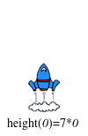

Los estándares con el prefijo BS son específicos de Bootstrap; Otros son del Common Core. Pase el mouse sobre cada estándar para ver sus correspondientes declaraciones de evidencia. Nuestra Documento de estándares Muestra qué unidades cubren cada estándar.
8.F.1-3: The student defines, evaluates, and compares functions
comparison of properties of two functions each represented in a different way (algebraically, graphically, numerically in tables, or by verbal descriptions)
A-SSE.1-2: The student interprets the structure of expressions to solve problems in context
interpretation of expressions that represent a quantity in context
interpretation of terms, factors, and coefficients of an expression
F-BF.3-4: The student builds new functions from existing functions.
inversion of a function
F-IF.1-3: The student uses function notation to describe, evaluate, and interpret functions in terms of domain and range
description of a function using terms domain and range
explanation that if f is a function and x is an element of its domain, then f(x) denotes the output of f corresponding to the input x
evaluation of functions using function notation for inputs in their domains
interpretation of statements that use function notation in terms of a context
F-IF.4-6: The student interprets the behavior of functions that arise in applications in terms of the context
interpretation of a relationship between two quantities in a table or graph in terms of key features
relation of the domain of a function to its graph and, where applicable, to the quantitative relationship it describes
BS-DR.1: The student is able to translate a word problem into a Contract and Purpose Statement
given a word problem, identify the domain and range of a function
given a word problem, write a Purpose Statement (i.e. - rewrite the problem in their own words)
BS-DR.2: The student can derive test cases for a given contract and purpose statement
given a Contract and a Purpose Statement, write multiple examples or test cases
given multiple examples, identify patterns in order to label and name the variables
BS-DR.3: Given multiple test cases, the student can define a function
given examples and labeled variable(s), define the function
Duración: 110 Minutos
Glosario:
contrato: una declaración del nombre, dominio y rango de una función
declaración de propósito: una breve descripción de lo que hace una función
dominio: el tipo de datos que espera una función
ejemplos: muestra el uso de una función en entradas específicas y el cálculo que debe realizar la función en esas entradas
nombre: cómo nos referimos a una función o valor definido en un idioma (ejemplos: +, *, estrella, círculo)
rango: el tipo de datos que produce una función
receta de diseño: una secuencia de pasos que ayuda a las personas a documentar, probar y escribir funciones
tipo: se refiere a un tipo general de datos, como Number, String, Image o Boolean
variable: algo que cambia
Materiales:
Preparación:
Tipos
Funciones
Values
Number
+ - * / sqr sqrt expt
1 ,4 ,44.6
String
string-append string-length
"hello"
Image
rectangle circle triangle ellipse star scale rotate put-image
(circle 25 "solid" "red")
La Receta de Diseño
Repaso
Students are formally introduced to the steps of the Design Recipe.
Objetivos de aprendizaje
Students practice using Contracts to create examples of functions
Students learn to abstract over examples to create functions
Declaraciones de evidencia
Given a definition, students will be able to identify the Name, Type and Value that is defined.
Given a contract and purpose statement for a simple, one-variable function, students will be able to write two Examples
Given two examples for a simple function, students will be able to identify the variable
Given two examples for a simple function, students will be able to write the definition
Resultados del Producto
Los estudiantes usarán la receta del diseño para definir una función, que se utiliza para hacer una mosca del cohete.
Materiales
Lapiceros/lápices para los estudiantes, marcadores de pizarra para profesores
Cartel de clase (Lista de reglas, tabla de lenguaje, calendario del curso)
Tabla de Lenguaje (Vea abajo)
El Libro de Trabajo del estudiante, carpetas con nombres en las cubiertas y algo con que escribir.
Preparación
Agenda para escribir disponible.
Mostrar carteles de la clase, Tabla de Lenguaje, receta de diseño.
Entorno de edición (WeScheme o DrRacket con el bootstrap-teachpack instalado).
"Rocket" [Rocket.rkt de source-files.zip | WeScheme] precargado en las máquinas de los estudiantes.
Disposición de asientos: idealmente grupos de escritorios/mesas
La Receta de DiseñoLas funciones son una parte clave de la animación en los programas informáticos. Una función que dibuja una imagen estática de un gato,
por ejemplo, puede colocar el gato en una ubicación diferente en función de la entrada. Cuando esa entrada cambia ligeramente
basada en el tiempo o la interacción del usuario, el gato parecerá moverse. Esto es similar a la forma en que la animación flip-book
funciona, en la que cada página dibuja una imagen estática que ha cambiado por una pequeña cantidad. Cuando las páginas
se muestran rápidamente, las imágenes parecen cambiar
Review the importance of definitions for students (defining values helps cut down on redundancy
and makes future changes easier, defining functions allows for simplicity and testability.
Be sure to use vocabulary regularly and carefully, pushing students to use the proper terms
throughout.)
Juntando estas imágenes, llegamos a una animación del cohete que sube por la pantalla.
Vamos a ver un ejemplo de este tipo de animación, utilizando una función para hacer un lanzamiento de cohetes, Ve a la
Página 1 de tu libro, y lee el problema de palabras cuidadosamente.
Check student understanding carefully, to make sure students read the problem carefully. It may be helpful to draw a diagram or table showing the change of rocket position on the board, and to have students verbally walk through a few examples.
Un cohete se lanza, viajando a 7 metros por segundo. Escribe una función llamada rocket-height que toma el
número de segundos que han pasado desde que el cohete despegó, y que produce la altura del cohete en ese momento.
¿Qué toma como entrada la función rocket-height ?¿Qué tipo de dato es?
¿Qué produce como salida la función? ¿Qué tipo de dato es?
¿Cuáles son las tres partes de un Contrato?
¿Cuál es el Nombre de la función que se te pide definir?
¿Cuál es el Dominio de la función?
¿Cuál es el Rango de la función?
El Contrato es una manera de pensar sobre la función de una manera general, sin tener que preocuparse por exactamente cómo funcionará o cómo se utilizará. Comenzar con preguntas sencillas como estas hará que los pasos posteriores sean mucho más fáciles de pensar. Sin embargo, ¡el contrato no siempre tiene suficiente información! El dominio de star, por ejemplo, especifica que la función necesita un número y dos cadenas, pero no menciona el hecho de que la primera cadena debe ser "solid" o "outline". Para agregar esta información, los programadores escriben declaración de propósito, que son oraciones simples que explican lo que hace una función.
Debajo del Contrato, escribe la siguiente Declaración de Propósito para rocket-height.
This is an opportunity to talk about the importance of writing, clarity, and brevity. What information is essential for a purpose statement? What information is irrelevant? A good purpose statement describes what is computed and how its inputs are used; it should go beyond the information given in the contract and implicit in the name of the function.
Construyendo la Declaración de contrato y propósito, se hace fácil escribir un EXAMPLE. Cada ejemplo comienza con el nombre de la función y una entrada de muestra, ambas de las cuales están escritas en el Contrato. En este caso, tú sabes que la función se llama rocket-height y que espera un solo número como entrada. La declaración de propósito va más allá, diciéndote que la entrada se multiplica por 7. Podemos usar esto para escribir dos ejemplos, con diferentes números de segundos como entradas.
Nota: ¡El ejemplo mostrado arriba se divide en dos líneas! A medida que las funciones y los ejemplos se vuelven más complejos, será difícil comprimirlos en una sola línea. En los libros, cada ejemplo y definición a partir de este punto utilizará el formato de dos líneas.
The main idea for students in this activity is to realize that the Contract and Purpose Statement can be relied upon to write examples. Ask students to justify every part of each example, using only the Contract and Purpose Statement. Students are often tripped up by the switch from one-line examples to two-line ones. Be very careful to point this out to students, and to check their workbooks to see where they are writing their examples. At the end of the activity, make sure that students circle ONLY what has changed.
)
En tu libro, escribe dos nuevos ejemplos de rocket-height usando diferentes valores para el número de segundos. Ambos ejemplos tendrán mucho en común (todos usan rocket-height como el nombre de la función, todos ellos multiplican su entrada por 7, etc.). Una vez que haya terminado de escribirlos, encierre en un círculo solamente las partes de los ejemplos que sean changeable.
Al comparar dos ejemplos diferentes, es fácil decir qué cambia. De acuerdo con la Declaración de Propósito, es el número de segundos que el cohete ha estado volando.
En tu papel, etiqueta con "segundos" los elementos que rodeaste.
Have a discussion with students about why "seconds" is a better name than "time". Talk about specificity, relevance, and readability.
Etiquetar lo que es cambiable da a los programadores un sentido para los nombres de las variables de una función. Las variables son como marcadores de posición para valores que pueden ser diferentes en diferentes momentos. Una función que calcula cuánto pagas por mensajes de texto cada mes, por ejemplo, puede tener una variable para el número de mensajes que enviaste en ese mes. El número de mensajes enviados puede cambiar de mes a mes, pero cada uno puede costar 20 centavos.
¿Cuántas variables tiene rocket-height? ¿Cuál es el nombre de cada variable? Define la función, utilizando toda la información de tus Ejemplos, Contrato y Propósito.
As with the Examples, ask students to justify each part of the definition. In this case, the function name can be derived from the Contract, and the variable name and function body from the Examples.
La Receta de Diseño permite al programador enfocarse en un paso del problema a la vez y usar los pasos anteriores para completar el siguiente.
¿Qué dice el Contrato a un programador acerca de una función?
¿Qué dice la Declaración de Propósito a un programador acerca de una función?
¿Cómo el Contrato y la Declaración de Propósito ayudan a un programador a escribir Ejemplos?
¿Por qué es útil circundar y etiquetar las partes de los ejemplos que cambian?
¿Cómo todos estos pasos ayudan a un programador a definir una función?
Puedes haber notado que los ejemplos para rocket-height mostraron la multiplicación como (* 11 7),
en lugar de la respuesta real (77). ¿Por qué molestarse en mostrar la forma en que se realiza un cálculo? Al hacer esto,
los ejemplos pueden proporcionar indicios sobre qué proceso está teniendo lugar. En el código proporcionado (Rocket.rkt de
source-files.zip | o online file),
Verás por qué es tan importante mostrar tu trabajo al escribir ejemplos.
Haz clic en "Run", y espera hasta que aparezca una ventana con un cohete en la parte inferior de la pantalla y los números de "tiempo" y "altura" en la parte superior. Esta animación está configurada para actualizar el cohete cada vez que se presiona la barra de espacio, para simular el paso del tiempo. Pulsa la barra espaciadora varias veces y observa que aumenta el tiempo en la parte superior de la ventana. ¿Se mueve el cohete? ¡El tiempo está pasando, pero la altura de nuestro cohete no ha cambiado! Cierra la ventana del cohete, para que puedas ver el código.
El contrato para esta función es correcto: el nombre, el dominio y el rango de la función se escriben aquí con precisión. Sin embargo, el siguiente paso definitivamente tiene algunos problemas:
Sólo hay un ejemplo. Esto hace que sea difícil darse cuenta de lo que está cambiando, lo que podría conducir a errores al identificar variables
El ejemplo no muestra cómo se calcula la altura, sino que este programador acaba de escribir la "respuesta", sin mostrar su trabajo.
Al omitir estos pasos en los ejemplos, puede ser fácil cometer errores al definir la función.
¿Puedes ver el error que cometió el programador?
Sin ver múltiples ejemplos, este programador no se dio cuenta de que la altura del cohete debe calcularse para cada entrada. En su lugar, sólo producen el mismo número cada vez (en este caso, cero). Como resultado, el cohete está siempre a cero, no importa cuántos segundos hayan pasado.
Corrige el ejemplo de este programador para mostrar su trabajo.
Escribe un segundo Ejemplo, debajo del primero.
Corrige la definición de la función, de modo que multiplique el número de segundos por 7.
¡Haz clic en "Run", y luego usa la barra espaciadora para hacer que el cohete vuele!
Practicando la Receta de Diseño
Repaso
Students use the Design Recipe to define simple functions (of one and two variables), given various word problems
Objetivos de aprendizaje
Declaraciones de evidencia
Given a contract and purpose statement for a simple function, students will be able to write two Examples.
Given two examples for a simple function, students will be able to identify the variable
Given two examples for a simple function, students will be able to write the definition
Resultados del Producto
Los estudiantes escribirán funciones para resolver problemas sencillos usando la receta de diseño.
Materiales
Lapiceros/lápices para los estudiantes, marcadores de pizarra para profesores
Cartel de clase (Lista de reglas, tabla de lenguaje, calendario del curso)
El Libro de Trabajo del estudiante, carpetas con nombres en las cubiertas y algo con que escribir.
Preparación
Agenda para escribir disponible.
Mostrar carteles de la clase, Tabla de Lenguaje, receta de diseño.
Disposición de asientos: idealmente grupos de escritorios/mesas
Practicando la Receta de Diseño(Tiempo 40 minutos)
Practicando la Receta de DiseñoLas instrucciones del diseño son una hoja de ruta para definir las funciones, que los programadores utilizan para asegurarse de que el código que escriben hace lo que quieren que haga. Cada paso se basa en el último, por lo que cualquier error se puede detectar a principios del proceso. Esta hoja de ruta tiene una serie de pasos:
Pasar de un problema de palabra a un contrato
Escribir ejemplos basados en el contrato
Definir una función que coincida con los ejemplos
Comienza por practicar cada uno de estos pasos, uno a la vez.
Para cada uno de los siguientes problemas de palabra, anota el Contrato:
Define una función ’purple-star’, que tome el tamaño de la estrella y produzca una estrella púrpura del tamaño dado.
Define una función ’spot’, que tome un color y produzca un círculo sólido de radio 50, relleno con ese color
Para encontrar el promedio de dos números, deben ser agregados y divididos por dos. Definir una función ’average’, que tome dos números y produzca su promedio
Un logotipo de la compañía es una palabra dibujada en letras grandes, rojas, girada un cierto número de grados. Definir una función ’logo’, que lleve un nombre de empresa y una rotación, y produzca un logotipo para esa empresa
Asegúrate de incluir un buen nombre para cada función, y recuerda que Dominio y Rango sólo pueden incluir tipos como Numbers, Images, Strings, etc.
[Video] If students come up with different Domains or Ranges for their functions, have them explain their thinking for each one. These conversations are an important part of this step!
Un contrato es la base de una función, que proporciona a los programadores la información suficiente para usarlos: el nombre de la función, los tipos de datos que espera y el tipo de datos que devuelve.
Ahora que has completado los Contratos para los cuatro problemas de palabras, trata de generar dos Ejemplos para cada uno.
Challenge students to defend their Examples (their function name, the number of inputs, their types and the type of the returned value). Make sure that the two Examples for each function have different input values! For each of these questions, students must be able to point to the specific part of their Contract as the justification for their Example.
Una vez que tengas dos o más ejemplos, debe ser fácil identificar lo que ha cambiado entre ellos. De hecho, el número de cosas que cambian debe coincidir con el número de cosas en el dominio de la función: si el dominio tiene un número y una cadena en él, entonces esos dos valores deben ser las cosas que difieren entre los ejemplos.
Identificar lo que ha cambiado entre estos ejemplos, y utilizar esta información para definir las cuatro funciones.
Make sure students have chosen good variable names for their function definitions, and ask students to justify every part of the function body. The only acceptable answers should be "I copied this because it’s the same in both Examples", or "I used a variable name because it differs between Examples."
Ve a la Página 1 En su libro de trabajo, y lee el problema de palabra cuidadosamente.
Encierra el nombre de la función, y subraya lo que toma y lo que produce.
Escribe el Contrato para esta función, utilizando lo que subrayaste para ayudarte a encontrar el Dominio y Rango.
Debajo del Contrato, escribe la Declaración de Propósito resumiendo lo que hace la función en una sola oración
Challenge students to explain why this function does not need to know the color of the square, or whether or not it is solid. They main idea here is that the function already "knows" these things, so the only thing that is changing is the size of the square.
Note that there are actually two easy solutions here: using the square function, or using rectangle with the same variable for width and height.
Recuerda que la Declaración de contrato y propósito se puede utilizar para escribir los ejemplos, incluso si un programador no está seguro de cómo comenzar.
Utilizando solo la Declaración de contrato y propósito, ve si puedes contestar las siguientes preguntas:
Cada ejemplo comienza con el nombre de la función. ¿Dónde puedes encontrar el nombre de la función?
Cada ejemplo tiene que incluir entradas de muestra. ¿Dónde podrías encontrar cuántos insumos necesita esta función, y qué tipos son?
Cada ejemplo tiene que incluir una expresión para lo que la función debe hacer cuando se le da una entrada. ¿Dónde puedes buscar para saber qué hace esta función?
Escribe dos Ejemplos en tu papel, luego marca y etiqueta lo que está cambiando entre ellos.
Make sure students realize that every answer can be found in the Contract or Purpose Statement. Suggestion: write these steps on the board, and draw arrows between them to highlight the process. The goal here is to get students into the habit of asking themselves these questions each time they write Examples, and then using their own work from the previous step to find the answers. NOTE: students can solve this using either square or rectangle. The latter requires them to use the same variable twice, which is a useful thought-exercise.
Una vez que se escriben los dos Ejemplos y se etiquetan las variables (o variables), se hace fácil definir la función.
Usando el Contrato, la Declaración de Propósito y los Ejemplos, ve si puedes contestar las siguientes preguntas:
Cada definición de función comienza con el nombre. ¿Dónde escribiste esto?
Cada definición tiene que incluir nombres de variables para las entradas. ¿Dónde escribiste esto?
Toda definición debe funcionar exactamente como lo hicieron los Ejemplos. ¿Dónde puedes mirar para averiguar que debe hacer la función?
Escribe la definición de función en tu papel.
Cuando digitas en una definición de función, asegúrate de digitar las tres partes, El Contrato y Declaración de Propósito, los Ejemplos y la Definición.
Cuando haces clic en "Run", la computadora leerá la definición, evaluará tus ejemplos para asegurarse que funciona correctamente y entonces agregará la definición a tu lenguaje.
Una vez agregado, puedes usar la función como si hubiera sido construida dentro de la computadora.
Algunas funciones toman más de una entrada. La función red-square siempre hace cuadrados rojos sólidos, siendo el tamaño lo único que varía. Supongamos, sin embargo, que queríamos que la función hiciera cuadrados rojos que pudieran ser sólidos o solo el contorno. Esto significa que tanto el tamaño como el estilo pueden variar, por lo que un usuario puede escribir (red-square 50 "solid") o (red-square 50 "outline")
¿Cómo cambiaría el dominio de la función?
¿Cómo cambiarían los ejemplos?
¿Cómo cambiaría la definición?
Cambie cada parte del código que escribió, para permitir que red-square acepte "solid" o "outline" como segundo argumento.
La Receta de Diseño se puede utilizar para las funciones que toman cualquier número de entradas. Como un ejemplo simple, tome el siguiente problema de palabra:
Ve a la Página 1 en el libro y lee la palabra problema cuidadosamente.
Rodea el Nombre de la función, y subraya lo que toma y lo que produce.
¿Cuántas cosas toma esta función como entrada? ¿Son números? ¿Instrumentos de cuerda? ¿Imágenes?
Escribe el Contrato para esta función, utilizando lo que subrayaste para ayudarte a encontrar el Dominio y Rango.
Debajo del Contrato, escribe la Declaración de Propósito resumiendo lo que hace la función en una sola oración.
Escribe dos Ejemplos para esta función, luego rodea en circulo y etiqueta lo que varía entre ellos.
Escribe la Definición para esta función.
If time allows, pass out extra Design Recipe worksheets [PDF], and have students practice with other word problems. Practice variations on red-square, involving two inputs changing while other parameters stay fixed.
La Receta de Diseño (Algebra)
Repaso
Objetivos de aprendizaje
Declaraciones de evidencia
Resultados del Producto
Materiales
Preparación
La Receta de Diseño (Algebra)(Tiempo 40 minutos)
La Receta de Diseño (Algebra)El verdadero poder de la programación no es lo bien que conoces el lenguaje. ¡Se trata de lo bien que se puede utilizar para resolver problemas!
Has aprendido sobre una herramienta de gran alcance que te ayuda a tomar problemas en el papel y convertirlos en funciones en el equipo:
¡La Receta de Diseño! Resulta que la Receta de Diseño también se puede utilizar para ayudarte a resolver problemas de álgebra, ¡también!
Ve a la Página 1 de tu libro de ejercicios, lee atentamente el problema y anota el Contrato
para la función:
"Un cohete está volando de la Tierra a Marte a 80 millas por segundo. Escribe una función que describa la distancia que el cohete
ha viajado, en función del tiempo"
La distancia que recorre un cohete se mide en números de millas, y el tiempo se mide en números de segundos. Esto nos da
el contrato:
Al igual que antes, el Contrato nos da una fuerte pista sobre cómo escribir los Ejemplos. Aquí hay un ejemplo, escrito en
Código Racket: (EXAMPLE (distance 5) (* 5 80)) Aquí está el mismo ejemplo, escrito en álgebra:
Escribe dos ejemplos adicionales para esta función, usando la notación algebraica.
Point out that the Contract hasn’t changed at all between Racket and Algebra.
If students are struggling with the change in syntax, let them first write the Examples in Racket, and
then convert them to Algebra by following the model shown here.
Como antes, las variables de una función pueden ser identificadas escribiendo dos Ejemplos, y mirando qué cambia entre ellos.
Utilizando los Ejemplos que has escrito, identifica la(s) variable(s) para la función.
A continuación, define la función usando sintaxis algebraica.
La Receta de Diseño ayuda a la transición de una descripción escrita de una función en una definición formal,
Ve a la Página 1 en tus libros, lee cuidadosamente el problema y escribe
abajo del contrato para la función: "Un cohete está viajando de la tierra a Marte
a 80 millas por segundo. Escribe una función que describa el tiempo que el cohete ha estado viajando en
función de la distancia."
Point out that this is the same relationship between distance and time as before,
only now we want be able to see the relationship from the opposite direction: time in terms of
distance, rather than distance in terms of time.
Una vez que tengamos el Contrato, es fácil escribir Ejemplos:
Utiliza el Contrato para escribir dos Ejemplos para esta función, luego identifica la(s) variable(s) para la función.
¿Cuántas variables tiene esta función?
Nombre de la(s) variable(s).
Define esta función, usando la sintaxis algebraica.
Una vez que tu función está configurada, es fácil simplemente conectar valores y obtener respuestas. Con la mayoría de los problemas, lo difícil es establecer la función en primer lugar. ¡Por suerte, la receta de diseño hace que la configuración de esta función sea mucho más fácil! Lo hemos utilizado para configurar dos funciones diferentes, que podrían usarse para darnos respuestas en términos de distancia o tiempo. Definir funciones es como herramientas de construcción, que puedes utilizar para resolver problemas simples o combinar para resolver problemas más complejos.
Supongamos que querías saber hasta dónde viajó el cohete en 6 segundos: ¿cuál de las dos funciones usarías? ¿Y si querías saber cuánto tiempo tarda el cohete en recorrer mil millas?
Ask students to identify which function they would use to answer a variety of different questions.
Ve a la Página 1 en tus libros, lee cuidadosamente el problema:
"Un cohete sale de la Tierra, se dirige a Marte a 80 millas por segundo." Al mismo tiempo, un asteroide
deja a Marte viajando hacia la Tierra, moviéndose a 70 millas por segundo. Si la distancia desde la Tierra
a Marte es de 50.000.000 millas, ¿cuánto tiempo les llevará a reunirse?
¿Cuáles son los hechos que el problema te proporciona?
¿Que se te pide del problema?
Utiliza tus respuestas para completar la siguiente oración: "Dado ____, escriba una función que produzca ____."
Si tal función existiera, ¿cuál sería un buen nombre para ella?
Ultimately, the problem is asking students about a functional relationship between distance and collision-time.
Si tuviéramos una función que computara el tiempo de colisión, sería fácil responder a esta pregunta simplemente tapando la distancia entre la Tierra y Marte. En lugar de empezar a preocuparte por la creación de una ecuación, ¡puedes utilizar la receta de diseño para construir la función en sí!
Anota el contrato para esta función, luego escribe dos Ejemplos usando distancias diferentes.
Por ahora, tienes el contrato para esta función y una buena declaración de propósito:
Así que ahora tenemos que averiguar qué cálculos van después del signo igual. Por suerte, tenemos una pista: sabemos que sea lo que sea, debe resultar cero, ya que sabemos que ya han colisionado cuando están a una distancia de cero millas.
Si el cohete va a 80 millas por segundo, y el asteroide va a 70 millas por segundo, ¿qué tan rápido se están acercando?
, Por lo que sabemos que se están acercando cada vez más a una velocidad de 150 millas por segundo. Esto no es tan diferente de nuestra función time: tenemos cierta velocidad, y queremos saber cuánto tiempo tomará recorrer una distancia determinada. Entonces, ¿qué escribimos para nuestro ejemplo?
Escribe dos ejemplos usando diferentes distancias, a continuación, define la función para que funcione con cualquier distancia.
A estas alturas, es posible que ya veas el cuadro general: la distancia dada en este problema puede ser conectada a la ecuación
sin tener que definir la función en sí. ¡A veces la Receta de Diseño te guiará a la respuesta sin
incluso tener que terminar! Otras veces, sin embargo, es posible que no veas el panorama hasta que hayas roto el problema
hacia abajo en partes más pequeñas, cada uno con su propia función.
You can add as many Design Recipe pages as you like to the workbooks, using any algebra problem you like.
We recommend using word problems from your students’ algebra textbook, or even from your state’s standardized test!
Concluyendo
Repaso
Objetivos de aprendizaje
Resultados del Producto
Materiales
Preparación
Concluyendo(Tiempo 5 minutos)
ConcluyendoEn esta unidad, comenzaste a ver cómo las funciones son útiles en la escritura de animaciones: las funciones ayudan a producir información (como la altura de un cohete) que se utilizan para crear escenas en un juego. Con las funciones adicionales de escritura de la práctica y usando la receta de diseño, ya estás listo para comenzar a escribir funciones que moverán los elementos dentro de tu propio juego.
Have students volunteer what they learned in this lesson
Reward behaviors that you value: teamwork, note-taking, engagement, etc